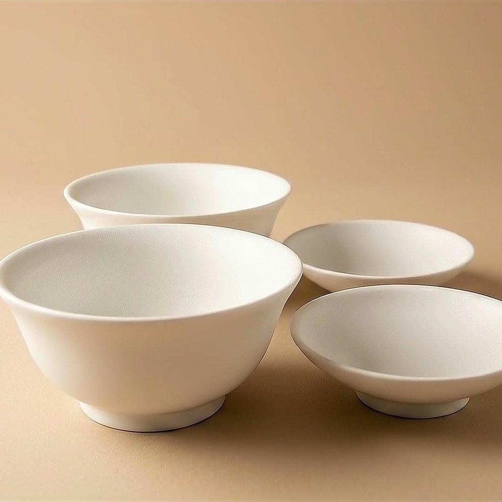
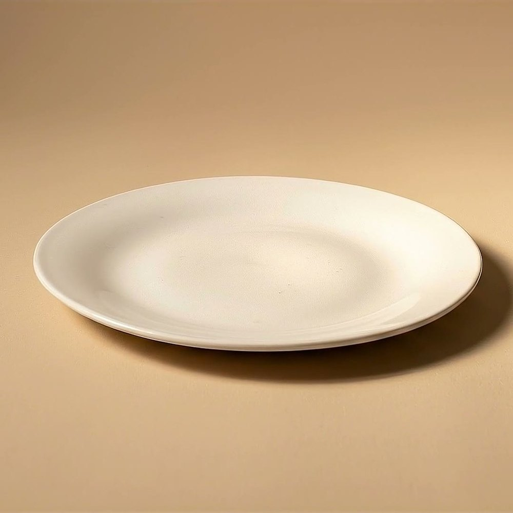
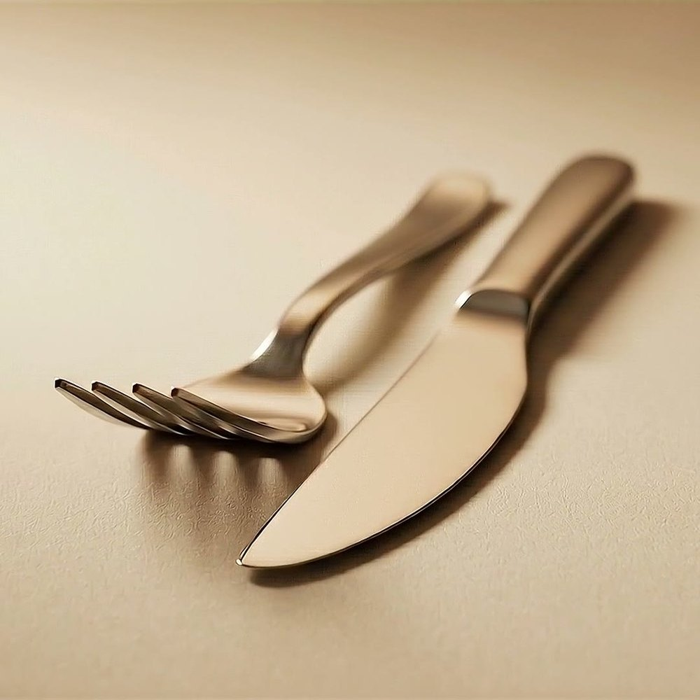
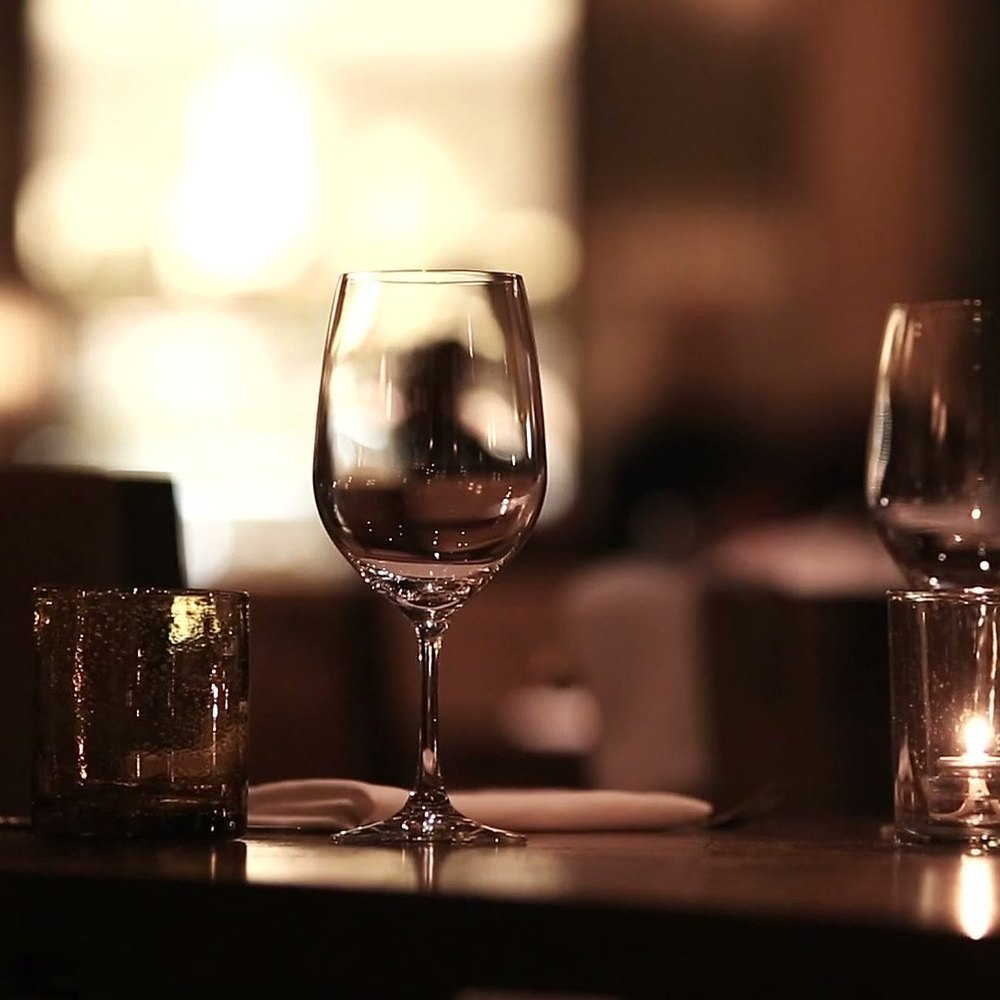
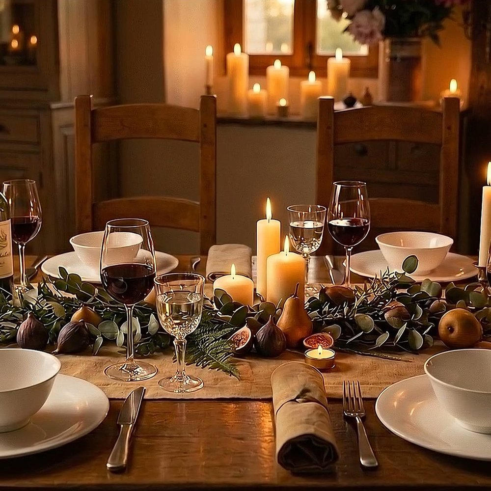

Studio Noord ontwerpt servies en bestek dat rustig oogt en tegen een stootje kan. Voor thuis, en voor wie gasten ontvangt.

Wij bedenken, maken en leveren tafelgoed in een eigen, rustige stijl.
Elke vorm tekenen we zelf: eenvoudig, tijdloos en prettig in de hand.
Fijn wit porselein en roestvrij staal, gemaakt om elke dag te gebruiken.
Als complete set, zodat alles op tafel bij elkaar past.
Onze nieuwste collectie: servies en bestek die bij elkaar horen, in één rustige lijn.

Borden en kommen in fijn wit porselein.

Strak bestek met een zachte glans.

Alles voor een tafel waar je graag aanschuift.
In een halve minuut zie je het servies, het bestek en de sfeer van de collectie.

Een goed gedekte tafel begint met servies dat rustig is en tegen een stootje kan. Collectie Noord is gemaakt om elke dag te gebruiken.
Vraag de brochure van onze collecties aan of stel je vraag. We helpen je graag verder.